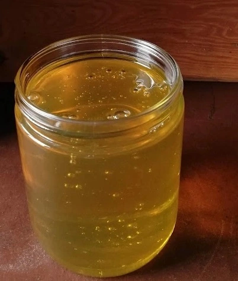

Lime tree

Lime tree honey is less sweet. It is usually liquid and has a slighty green color.
Creamy honey
This honey stays creamy for a long time. Our bees visit rapeseed fields many time to collect this honey.
Summer mix
For this sweet sommer mix our blees collect from all trees and flowers blossoming in summer.
Rhobinie
In summer, this honey is liquid. It has a slight taste of caramel. However, when temperatures get colder, this honey will get solid.